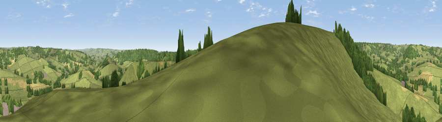

Viewpoint near Southleigh
#23664 in England · top 53% of its area beats it · near SouthleighThe view, rendered

A 360° render of this exact spot computed from the terrain model, tree cover and land cover — summer colours, afternoon light, calibrated against photographs of famous viewpoints. Real trees, hedges and buildings will differ in detail.
The panorama
Grey silhouette: terrain skyline in each direction (720 bearings, Earth curvature and refraction included). Dashed green: skyline with trees (+15 m) and buildings (+8 m) as obstacles. Blue strip: how far the ground is visible on each bearing.
Where the view opens
Wedge length = distance to the farthest visible ground on that bearing (vegetation-aware). Rings at 10, 25 and 50 km.
What fills the view
75% grassland · 16% woodland · 9% cropland ·
Angular shares of the visible panorama (visual magnitude), not map area. Landscape diversity 0.34 (0–1 Shannon).
Key numbers
More beautiful places nearby
The staircase of upgrades: each row has a higher view potential than everything closer. Driving times are estimates from straight-line distance, calibrated against real road routing — check an actual route before setting out.
| Place | Direction | Drive | Score |
|---|---|---|---|
| Viewpoint near Farway | W · 3 km | ~6 min | 56.3 |
| Viewpoint near Northleigh | NE · 4 km | ~8 min | 57.4 |
| Viewpoint near Seaton | SE · 5 km | ~11 min | 67.3 |
| Viewpoint near Branscombe | S · 6 km | ~13 min | 77.3 |
| Viewpoint near Branscombe | SSW · 6 km | ~13 min | 81.0 |
| Viewpoint near Tipton St John | WSW · 9 km | ~18 min | 81.5 |
| Viewpoint near Axmouth | ESE · 10 km | ~20 min | 82.4 |
| Viewpoint near Sidmouth | SW · 11 km | ~21 min | 83.0 |
50.74114, -3.14117 · source: screening · position refined by local search. Computed location — check access rights before visiting.